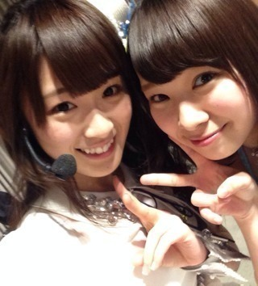
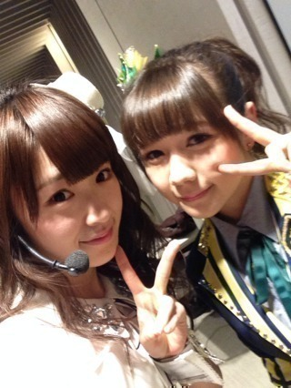

2013/1128Thu（´-`）.｡oO(か ずみん×242
.
.
いつも応援ありがとう(*´ｰ`*人)
.
一億人の親戚、高山一実です☆
.
.
.
かなとまっちゅんがMCをしている
生のアイドルが好き！
先ほど生出演させていただきました♪
.
見てくださった皆さんありがとう♡
カーキュリー(私)は
とても楽しかったです(*´ω`*)
また呼んでちょ！
.
.
.
.
.
昨日のベストアーティスト2013
見てくださいましたか！？
髪型は結局巻き巻きヘアにしましたっ♪
.
.
.
楽屋の近くのドリンクを
取りに行ったら、生駒ちゃんと
松井玲奈さんが！！！
.
そして玲奈さんが
チョコをくださりました！
私はチョコ好きなので
やったぁーっと食べたら
タバスコ味((((/*0*)/笑
.
ドSにアメイジングや！！！
でも私は辛いの好きやから
嬉しかったですヽ(´>∀<`*)ﾉ
ドMにアメイジングや！！！
.
.
.
生駒ちゃんのコミュ力を見習って、
NMBさんの楽屋の前へ。
初めての人と上手く喋れない高山、
自分から話に行けない高山、
でも今日は頑張りましたっ！
.
.
.
まーちゅんさんが
いらっしゃいました♡

髪の毛がツヤツヤで
SO CUTEでした( *´艸｀)
可愛くて面白くて大好きです！
あかりんさんも可愛かった...♡
ずっと思っていましたが
近くで見入ってしまいました...
途中で呼ばれてしまい写真が
撮れなかったのですが、
笑顔を見ただけで胸がいっぱいに
なりました！！！
またいつかお会いしたいです。
NMBさん、
紅白おめでとうございます！！！
.
.
.

村重ちゃんとも撮ったよ♪
ライトの下だから写真が影ってるorz
ごめんね(´;ω;`)
ほぼ初めましてでしたが
めんたいこ！！！と
アメイジング！！は近いものがあると
私の中で勝手に思っていまして...笑
お会いできて嬉しかったです(*´ω`*)
今度ゆっくりお話ししたいです！
めんたいこo(^▽^)o
.
.
可愛い皆さんに囲まれて
感無量でした♡変態か！
まゆゆさんは相変わらず
女神でしたT^T♡
.
.
あぁそしてなぜだろう...
今凄くキンタロー。さんに
会いたくなった！
一時期はアカン警察やドラフト会議や
なんか色んな番組で一緒になって、
けっこう会ってたんだけど
最近はまったくだなぁ(´;ω;`)
.
きっと私のこと忘れてるだろうなぁ...
また会いたいー！！！
.
.
.
.
.
.
会いたい人いっぱいいるー！
家族も地元の友達も高校の同級生も
先生方も今日会えなかったメンバーも。
人が好きだわぁ...
ってなんか私気持ち悪いかな(´-ω-`)
.
でもやっぱり...
.
.
.
.
.
.
.
ファンの皆さんにも早く会いたいなぁ(´･ｪ･｀)♡
.
うん。
なんかこういうの活字でしか言えない
タイプだけど活字でも恥ずいっす...///
.
.
.
.
.
前回の写真の答えは
右→なぁちゃん
左→ゆったん
人形の手→さゆにゃん
でした！！！
.
みんな2人は結構わかったみたいやね♪
3人全員正解したも想像以上に
いらっしゃってびっくりでした！！！
アメイジング＼(^o^)／
答えてくれて人ありがとう(*´ω`*)
MVの感想とかもありがとう(T_T)
.
.
.
.
内容詰め込みすぎてごめんよ〜(´;ω;`)
明日はナタリーさんの
バック8グラビア公開やから
みんな見てね〜♡
.
それでは、
おやすみなさい...☆
2013/11/28 23:30
コメント(416)
バレッタ
バケラッター
バケラッター
かずみんはーと
乃木坂DDです
乃木坂DDです
親にバレッタ買ったのバレッタ
めんたいことアメイジングって一緒かいな（笑）
アメイジングの方が好きだな
人形のやつしかわからんかった
アメイジングの方が好きだな
人形のやつしかわからんかった
かずみん、お疲れー！
そして今日はもう眠いので寝ます(笑)
おやすみーzzZ
そして今日はもう眠いので寝ます(笑)
おやすみーzzZ
お疲れ様！
まーちゅんに村重って
かずみんにピッタリなメンバーやな（笑）
かずみんにピッタリなメンバーやな（笑）
明里だよん(。・ω・)ノ゛
生ドル見てない…ごめんなさい
生ドル見てない…ごめんなさい
ひろあん☆も、かずみんに会いたいよ\(//∇//)\
親戚への格上げ，ありがとう！
ヤッシーです(^-^)v
親戚多いな(笑)
ちゃんと観ましたよーo(^o^)o
へばっまずな(^-^)/~~
親戚多いな(笑)
ちゃんと観ましたよーo(^o^)o
へばっまずな(^-^)/~~
お疲れ様でーす
ばっちりポジピース映ってましてねー
ばっちりポジピース映ってましてねー
全員当たったーーーーーヾ(＠⌒ー⌒＠)ノ
うぎうぎ(笑)
生ドル
たげ面白かったです！
いつかチャンバラちゃんと見たいですね…(笑)
うぎうぎ(笑)
生ドル
たげ面白かったです！
いつかチャンバラちゃんと見たいですね…(笑)
乃木坂最近テレビにたくさんでて嬉しいです(*^^*)
MJさっき観ましたよー♪
はんこ注射パン笑いました(*´ω｀*)
バック8楽しみです＼(^o^)／
MJさっき観ましたよー♪
はんこ注射パン笑いました(*´ω｀*)
バック8楽しみです＼(^o^)／
かずみん、モノマネもっとやって(OvO)
かずみんこんばんはー♪
生ドルはバイトで見れなかったから今からTSで見るよー＼(^o^)／
ベストヒットアーティスト見たよ！！！
aikoかわいかったー(笑)
さすがゲキカラだね(笑)
明日のナタリー楽しみにしてるねヾ(＠⌒ー⌒＠)ノ
それじゃあおやすみー♪
生ドルはバイトで見れなかったから今からTSで見るよー＼(^o^)／
ベストヒットアーティスト見たよ！！！
aikoかわいかったー(笑)
さすがゲキカラだね(笑)
明日のナタリー楽しみにしてるねヾ(＠⌒ー⌒＠)ノ
それじゃあおやすみー♪
かずみん可愛いぉぉぉ((((o(*ﾟ▽ﾟ*)o))))ｼｪｲｸ♪ｼｪｲｸ♪
かずみーん！！
おやすみ～♪ヽ(´▽｀)/
おやすみ～♪ヽ(´▽｀)/
かずみん！おれだ！カズマだよ！
いまちくんよろしく！！
いまちくんよろしく！！
ベストアーティスト見たよー！
みんな輝いてた☆*。
玲奈ちゃんうらやまー♡笑
ピースむずすぎでしょ！笑
みんな輝いてた☆*。
玲奈ちゃんうらやまー♡笑
ピースむずすぎでしょ！笑
おつかれさまですー！
クイズ思いっきり間違えてた！笑
あってた人すげぇー！
ベストアーティスト、テレビ越しやったけどめちゃテンションあがりましたー！！
ＡＫＢグループでまとめられてたけど、乃木坂４６が１番輝いてましたよ！！
年末の京都の握手会に、笑顔で行けるように、再試験の勉強頑張りますー笑
もう２週間きってるーやばいー！でも！
できるできひんちゃうねん！やるんや！！
クイズ思いっきり間違えてた！笑
あってた人すげぇー！
ベストアーティスト、テレビ越しやったけどめちゃテンションあがりましたー！！
ＡＫＢグループでまとめられてたけど、乃木坂４６が１番輝いてましたよ！！
年末の京都の握手会に、笑顔で行けるように、再試験の勉強頑張りますー笑
もう２週間きってるーやばいー！でも！
できるできひんちゃうねん！やるんや！！
かずみーーーーん
バカなのかずみんめっちゃかわええ！
したっ
したっ
優子が、乃木坂では高山ちゃんが気になるって言ってたお
カーキュリー・・・・・・・、また『パケラッタ』を忘れてるべｗ
どーーしたｗ？
個人的には川後Ｐとの剣道最強決定戦を生ドルでやってほしかったわーｗ
今度は飛び入りで出演しちゃえﾆﾔﾆﾔ(･∀･)
どーーしたｗ？
個人的には川後Ｐとの剣道最強決定戦を生ドルでやってほしかったわーｗ
今度は飛び入りで出演しちゃえﾆﾔﾆﾔ(･∀･)
かずみーん！
生ドル見ましたよ
すっごい面白かったです
いっぱい笑わせてもらいました（笑）
チャンバラはかずみんの思ったとおりにできなくて、ちょっと残念でしたね
でもみんなでわちゃわちゃしてるのが可愛かったです
あとあとバレッタ全タイプ買いましたよ！
「私のために誰かのために」すごい綺麗な曲ですよね
ライブで聴きたいな～
個人PVは松茸いっぱい食べてて羨ましい！
私小さいかけらしか食べたことないです（笑）
昨日のベストアーティスト2013もMJも見ました！
今週はラジオやテレビ等、乃木坂がいっぱいで嬉しいです
私も早くかずみんに会いたいよ
武道館はチケット当たったので行きますよ！
楽しみ～
＊ミニーちゃん大好きなコペでした＊
生ドル見ましたよ
すっごい面白かったです
いっぱい笑わせてもらいました（笑）
チャンバラはかずみんの思ったとおりにできなくて、ちょっと残念でしたね
でもみんなでわちゃわちゃしてるのが可愛かったです
あとあとバレッタ全タイプ買いましたよ！
「私のために誰かのために」すごい綺麗な曲ですよね
ライブで聴きたいな～
個人PVは松茸いっぱい食べてて羨ましい！
私小さいかけらしか食べたことないです（笑）
昨日のベストアーティスト2013もMJも見ました！
今週はラジオやテレビ等、乃木坂がいっぱいで嬉しいです
私も早くかずみんに会いたいよ
武道館はチケット当たったので行きますよ！
楽しみ～
＊ミニーちゃん大好きなコペでした＊
かずみーん♡
生ドル楽しかったーーー＼(^o^)／
一億人の親戚ㅋㅋㅋㅋㅋㅋ
キャッチフレーズとしてはシュールだね♡♡♡
でもかわいいからおけー♬
カーキュリーあんまり呼ばれてなかったけど、今度からそう呼ばせてもらいます♥
生ドル楽しかったーーー＼(^o^)／
一億人の親戚ㅋㅋㅋㅋㅋㅋ
キャッチフレーズとしてはシュールだね♡♡♡
でもかわいいからおけー♬
カーキュリーあんまり呼ばれてなかったけど、今度からそう呼ばせてもらいます♥
え？かずみんドMだったの？
だったら今日から推そうかな笑
がんばれかずみん！
だったら今日から推そうかな笑
がんばれかずみん！
村重ちゃんにもあったんだー！
僕はNMBの白間ちゃんとHKTの松岡ちゃん好きなんだよ(^^)
2sとれたらお願いしますねwww
お仕事お疲れ様！
なす
かずみん...じゃなくてカーキュリー(^_-)-☆笑
生ドル楽しかったよ(∩´∀｀)∩
かずみんの圧倒的強さのチャンバラ笑
村重と写メ撮ったのか！最近村重かわいいよねヽ(^o^)丿
今度かずみんレーンでめんたいこやるしかっ！笑
ナタリー楽しみ♡♡
生ドル楽しかったよ(∩´∀｀)∩
かずみんの圧倒的強さのチャンバラ笑
村重と写メ撮ったのか！最近村重かわいいよねヽ(^o^)丿
今度かずみんレーンでめんたいこやるしかっ！笑
ナタリー楽しみ♡♡
いまちんビーム握手会でやるね
生ドル見ましたよ(^^)v
今までで一番楽しかったよ～やっぱかずみんいると違うな～w
来月の幕張いきます！早くかずみんに会いたいです。
今までで一番楽しかったよ～やっぱかずみんいると違うな～w
来月の幕張いきます！早くかずみんに会いたいです。
かずみん！おれだ！愛してる！！
byいまち
byいまち
「生のアイドルが好き」見たよん☆
たかやまーきゅりーでもよかったのでは？？ｗ
うぉあ!!
やばいやばい!!
かずみんとまーちゅんとか(*/ω＼*)
もかみんNMBも好きやねん('∀'●)
あ、でも乃木坂のが100000倍大好きよぉヽ(´▽`)/
てんそんあげてくれてありがとう(o>ω<o)
いつか
かずみん×かなきちが見たい(´∀｀)
これからもっともっとテレビ出れるようにがんばろねヽ(´▽`)/
乃木坂目指せ紅白(o>ω<o)
前向き上向き強くなろう
もかみん(。・ω・。)
すごいメンバーとの写真ありがとうございます。
まゆゆとのツーショット見たかったです。
まゆゆとのツーショット見たかったです。
バケラッタ＼(^-^)／
ﾍﾞｽﾄｱｰﾃｨｽﾄよかったよー！可愛かった♪
はやくかずみんにあいたーい(;_;)
ﾍﾞｽﾄｱｰﾃｨｽﾄよかったよー！可愛かった♪
はやくかずみんにあいたーい(;_;)
ベストアーティストお疲れ～ヾ(≧∇≦)
生ドル見たよ！！
喉に負担がかかると思うけど、ひなぴょんの企画のカーキュリーの声かわいかったよ～(≧∀≦)
ハリーポッターのものまね全部見たかった～(泣)
おやすみ～(^_^)ﾉ
バケラッタ！
クイズなぁちゃんだけ外してしまったーーー
悔しーなー
今日も頑張ろう！！
クイズなぁちゃんだけ外してしまったーーー
悔しーなー
今日も頑張ろう！！
ずーさん こんばんは(^-^*)/
遅くまで ブログ更新
お疲れ様です。
名古屋ポートメッセの
個握会に伺います。
元気で
かわいい
ずーさんが
大好きです!
ほいじゃ
おやすみなさい。
遅くまで ブログ更新
お疲れ様です。
名古屋ポートメッセの
個握会に伺います。
元気で
かわいい
ずーさんが
大好きです!
ほいじゃ
おやすみなさい。
どうして乃木坂が紅白にでれないんだ・・・
生ドル、観てたよーー。
カーキュリー定着しなそうだね(笑)
あ、まーちゅんにあーにゃだ！なんか新鮮。
カーキュリー定着しなそうだね(笑)
あ、まーちゅんにあーにゃだ！なんか新鮮。
こんばんわ(*^^*) さえみんゆです♪
なんか楽しそうですね♪(*^^)o∀*∀o(^^*)♪
まーちゅんにあんなちゃん///
でもやっぱりかずみんが1番可愛いと私は思います。♡
早く私もかずみんに会いたいよー(´･_･`)
かずみーん！！
生ドルみたよー♡最高に面白かったし楽しそうなかずみん見れて嬉しかった♡
昨日のは、ガールズルールでかずみんアップになったシーンを何回も見返したで～(´▽｀)♡
個別握手会当たったから初めてかずみんに会えるから楽しみやーー(*^_^*)
かずみーん！明日も元気に頑張ってね♪♪
生ドルみたよー♡最高に面白かったし楽しそうなかずみん見れて嬉しかった♡
昨日のは、ガールズルールでかずみんアップになったシーンを何回も見返したで～(´▽｀)♡
個別握手会当たったから初めてかずみんに会えるから楽しみやーー(*^_^*)
かずみーん！明日も元気に頑張ってね♪♪
(^-^)ゞかずみんお疲れバケラッタ!!!お仕事、楽しそうで何よりです…これからクリスマスに年末に年始に…忙しいと思いますが…時には、息抜きして、がんばって駆け抜けて行って下さい!!!＼(^ｰ^)ゝ
かずみーーーん！ヽ(^0^)ﾉ
今日も世界一可愛いね！
ニコ生見たよー(^ｰ^)
まじ楽しかった
ひなちゃんが考えた萌え声
可愛すぎて震えたよw
ベストアーティストのガールズルール
テレビの前で泣いてしまったよ(T_T)
もうだめだこの涙腺…
早くかずみんに会いたいよーー！(>o<)
らびゅ！
今日も世界一可愛いね！
ニコ生見たよー(^ｰ^)
まじ楽しかった
ひなちゃんが考えた萌え声
可愛すぎて震えたよw
ベストアーティストのガールズルール
テレビの前で泣いてしまったよ(T_T)
もうだめだこの涙腺…
早くかずみんに会いたいよーー！(>o<)
らびゅ！
楽しそうなの伝わってるよ♪(^^)b
松茸三昧…贅沢な企画良かったね～
羨ましいぞっ!!
松茸三昧…贅沢な企画良かったね～
羨ましいぞっ!!
俺は、かずみさんに会いたいです！
以上かな？笑
短い。笑
以上かな？笑
短い。笑
お疲れさま(*^_^*)
生ドルはバイトで見れなかった…(´°ω°｀)
どっかに落ちてないかなぁ(*ﾟ-ﾟ)
ベストアーティスト見たで！
可愛かったっす(*ﾟ-ﾟ)
久しぶりのガルルやったね！
MJもみたで！
バレッタもいいね～
イントロがめっちゃ好き！
かずみんに会いたい(*ﾟ-ﾟ)
君の名は希望の全握以来行けてないけど(´°ω°｀)
今回は個握行くからね！
楽しみっす！
いろいろネタフリを考えとこ(＾ω＾ ≡ ＾ω＾)
よしっ！
今日も明日も頑張りまっしょい！
では、バケラッタ！
あっ、１億人の親戚って何？笑
生ドルはバイトで見れなかった…(´°ω°｀)
どっかに落ちてないかなぁ(*ﾟ-ﾟ)
ベストアーティスト見たで！
可愛かったっす(*ﾟ-ﾟ)
久しぶりのガルルやったね！
MJもみたで！
バレッタもいいね～
イントロがめっちゃ好き！
かずみんに会いたい(*ﾟ-ﾟ)
君の名は希望の全握以来行けてないけど(´°ω°｀)
今回は個握行くからね！
楽しみっす！
いろいろネタフリを考えとこ(＾ω＾ ≡ ＾ω＾)
よしっ！
今日も明日も頑張りまっしょい！
では、バケラッタ！
あっ、１億人の親戚って何？笑


バケラッタぁー(๑ ิټ ิ)